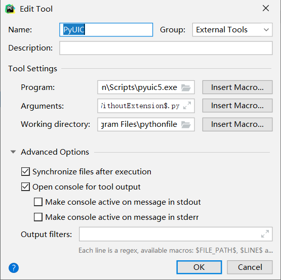

细数PyQt5中遇到的坑
之前因为说要搞一个自制的文献管理的软件，所以捣鼓了两下PyQt，遇到了不少的坑，遂作此记录，以来备忘，二来分享。
起步
安装PyQt5
1 | pip3 install pyqt5 -i https://pypi.tuna.tsinghua.edu.cn/simple |
配合PyCharm
在PyCharm里添加两个工具，方便开发。
Qt Designer #拖控件式操作，类似AndroidStudio，方便前期初步定下框架
PyUic #将在Designer里做好的框架直接编译成python，方便后续编辑美化
添加方法如下：
File–>Settings–>Tools–>External Tools
点击加号，弹出如下：以PyUIC为例

Program就是程序所在地，Arguments填入宏
$FileName$ -o $FileNameWithoutExtension$.py
Designer则只需要Program填写。
QMainWindow
起初仿照网上的教程，写的是QWidget，结果发现不能添加MenuBar，设置Icon等操作。所以主界面还是要用mainWindow。
1 | Form.setWindowIcon(QIcon('main.ico'))#set Icon |
之后就是在PyUIC转化后的代码后面加上：
1 | if __name__=="__main__": |
MenuBar和StatusBar
menubar就是我们使用软件最上面的一栏，
File Edit Tools Help
之类的，我们希望能在这上面增加功能
在mainwindow里设置menubar和statusbar如下：
1 | self.menubar = QtWidgets.QMenuBar(MainWindow) |
打开/创建文件功能
引入
1 | from PyQt5.QtWidgets import QFileDialog |
打开文件是在menubar上的操作，所以
1 | self.menuFile = QtWidgets.QMenu(self.menubar) |
我们希望是上面有个File，点一下，出现两个选项，一个New，一个Open
添加
1 | self.actionNew = QtWidgets.QAction(Form)#new action |
Define action_new and action_open
1 | def action_new(self): |
因为QFileDialog没有找到创建，所以使用了save，但效果是一样的，
os.getcwd() #获取当前目录
fname是文件名（含路径），第二个参数是类型，这里不需要所以用_省略了，函数里的第一个参数确定有无父级，网上很多是self，不过我测试的self，程序就崩溃，所以使用None。
状态栏
让状态栏显示文字使用
1 | self.statusbar.showMessage(string,time)#the unit of time is ms(1/1000s) |
快捷键
快捷键定义需要在retranslateUi函数后面，不然一些非组合键的快捷键会失效
1 | self.xxx.setShortcut('ctrl+w') |
TextBrowser
一般用的多的就是传递字符串
1 | self.textBrowser.setText(string) |
LineEdit
字符串传递使用
1 | self.lineEdit.text() |
获取焦点/光标
1 | self.lineEdit.clearFocus() |
pushButton
链接槽函数
1 | self.pushButton.clicked.connect(self.xxx)#不带参数 |
radioButton
初始默认
1 | self.radioButton.setChecked(True) |
点击
1 | self.radioButton.clicked.connect(self.xxx) |
判断是否选择
1 | self.radioButton.isChecked() #boolean |
Comments